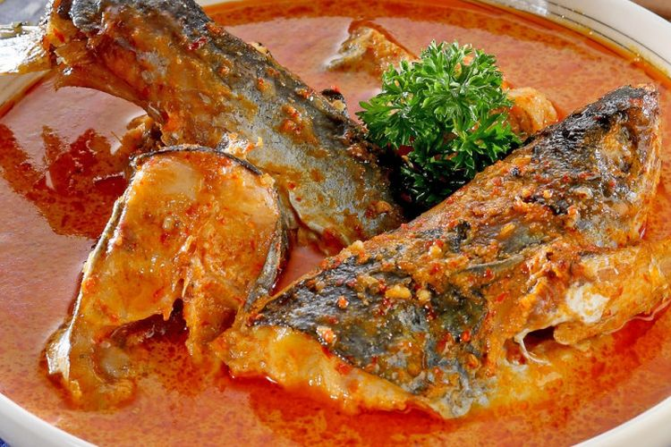

Food
Tempoyak

Tempoyak is one of the local food here in jambi. Tempoyak is made with durian which was fermented for a few days.
Due to the fermentation tempoyak tends to taste sour.
Usually tempoyak is used as a base for curry to make a fish dish, just as shown above